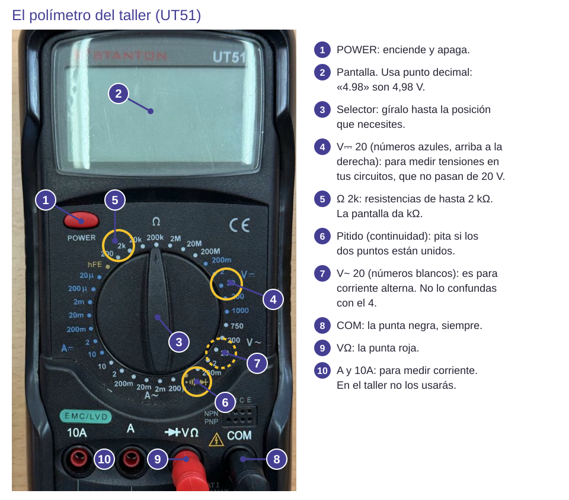
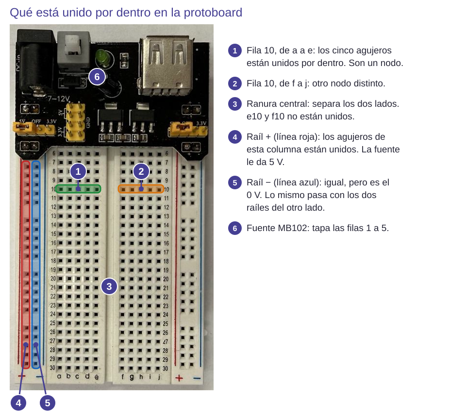
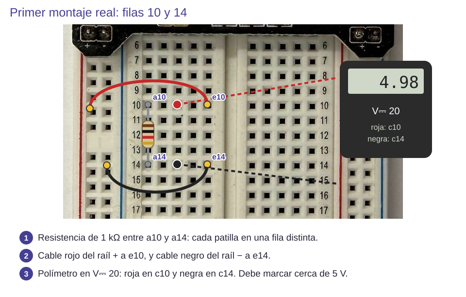

Contenido
El polímetro
El polímetro (o multímetro) del taller hace lo mismo que el de Tinkercad, pero hay que elegir bien dónde se enchufan sus puntas.

| Quieres medir… | Selector | Punta roja | Cómo |
|---|---|---|---|
| Tensión | V ⎓ (continua) | V/Ω | Las puntas tocan dos puntos, con la fuente conectada |
| Resistencia | Ω | V/Ω | La pieza suelta, sin fuente |
| Continuidad | 🔊 (pitido) | V/Ω | Sin fuente. Pita si dos puntos están unidos |
| Intensidad | A ⎓ | A/mA | Abriendo el circuito, en serie (solo si te lo piden) |
La protoboard
La protoboard o placa de pruebas sirve para montar circuitos sin soldar: las patillas se pinchan en los agujeros. Por dentro, unas láminas metálicas unen los agujeros en grupos.

La fuente del taller
La fuente es un pequeño módulo que se pincha en un extremo de la protoboard y se alimenta con un cargador USB. Da 5 V a los raíles laterales: el + queda en la línea roja y el − en la azul. Tiene un botón para encenderla y un LED verde que se ilumina cuando está encendida. Sus dos puentes amarillos tienen que estar en la posición 5V.
1. Comprueba la placa
- Sin fuente ni piezas, pon el polímetro en continuidad. Junta las puntas: debe pitar.
- Toca a3 y e3: pita, están unidos.
- Toca e3 y f3: no pita, la ranura los separa.
- Toca dos puntos de un raíl lateral, uno a cada lado de la mitad de la placa. Si no pita, el raíl está partido: tendrás que unirlo con un cable.
2. Primer montaje real

- Con la fuente desconectada, pincha una resistencia de 1 kΩ con una patilla en a3 y la otra en a7.
- Lleva un cable del raíl + (línea roja) a e3 y otro del raíl − (línea azul) a e7.
- Polímetro en V ⎓: roja en c3 y negra en c7.
- Pide a tu compañero que revise el montaje. Enciende la fuente: debe marcar cerca de 5 V.
| Lo que ves | Qué compruebas |
|---|---|
| Marca 0 V | ¿Está encendida la fuente (luce su LED verde)? ¿Están las puntas en las filas 3 y 7? ¿Llegan los cables de los raíles a e3 y e7? |
| No marca nada | Comprueba el selector, las puntas en COM y V/Ω y que la fuente esté encendida. |

Equipo: anotad en la Comprobación del equipo (apartado 1) qué comprobasteis de la placa y con qué instrumento.
Ahora tú. Desconecta la fuente y mide la resistencia sola, sacándola de la placa, en modo Ω. Después piensa: ¿cambia la medida de tensión si mueves la roja de c3 a d3? ¿Y a c4?
Ver solución
De c3 a d3 no cambia: es la misma fila, el mismo nodo. A c4 sí: es otra fila, que no está conectada a nada.
Compruébalo
Protoboard y polímetro: ¿verdadero o falso?
00:00: